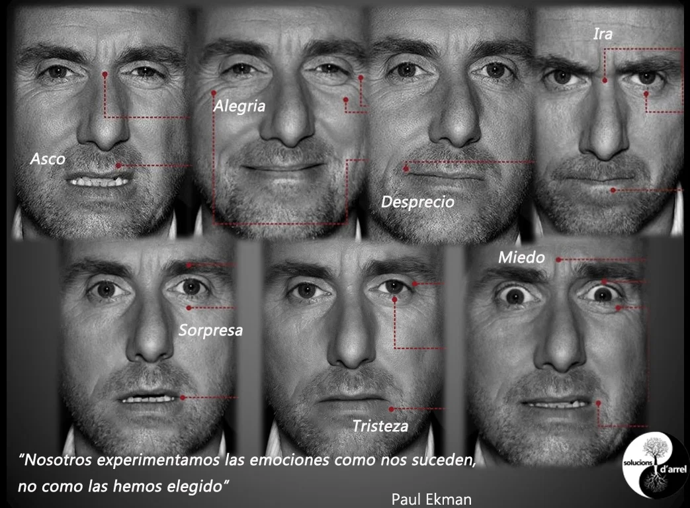

Evidencias presentadas por: Angel Briceño
Cuento: La Sapa Caramelo
Estaba la Sapa Caramelo sentada a la orilla del río cauca en el peñasco más alto de la región , a la Sapa Caramelo le gustaba ver el reflejo del río en el resto de la región, desde lo más alto de la región, y ese peñasco ya era su lugar predilecto para observar tranquilamente todo, ese peñasco casi tenía su nombre, pero un día, de tantos de los que iba a ese lugar, encontró un moco extraño sobre el lugar donde se sentaba, -que problema, pensó la Sapa pero simplemente se sentó a un lado a seguir su actividad rutinaria. En la siguiente ocasión el moco de extendió por el lugar, era resbaladizo pero definitivamente no se iba a dejar ganar, decidida, se sienta sobre ella y resbala a causa del viscoso moco, cae por el peñasco y rueda hacia abajo cuando... SAS! casi como puesto ahí, una estaca apareció de la cual la Sapa se tuvo para evitar lastimarse más, aunque le salvó la vida, se le hizo un nudo en la garganta de pensar que esa estaca puedo haber estado en otro lugar y la historia cambiaria por completo. De camino a su hogar, pisa un hueco de alcantarilla donde debería de haber una tapa en la misma, que terrible es sin dudar el destino de la Sapa Caramelo, con algo de esperanza grita por ayuda. Después de eso, se reportó como desaparecida por sus familiares y nunca la encontraron.
Tipos de Comunicación
Hecho con: Sebastián Castañeda
-
Según el video:
https://shre.ink/DDwx
¿Cuáles son los tipos de comunicación que asumen los seres humanos en su interacción cotidiana?
Respuesta:
- Pasiva
- Agresiva
- Pasivo-Agresiva
- Asertiva -
¿Cuál es la diferencia entre comunicación agresiva y comunicación pasiva?
Respuesta: En la agresiva no se muestra empatía frente a cómo se pueda percibir el mensaje por parte del receptor, normalmente se emplea un tono de voz alto, exigencias y palabras fuertes o hirientes. En cambio, en la comunicación pasiva, el receptor no pone sus sentimientos en juego ni expresa lo que siente, pudiendo así generar una acumulación de resentimientos o sentimiento de minimización. -
Ejemplo de comunicación pasiva-agresiva:
Respuesta: En el colegio, un estudiante está en desacuerdo con cómo un profesor enseña, así que le cuenta a todos los compañeros que es un mal profesor. Cuando habla con él, le lanza indirectas sobre sus pensamientos, pero nunca se ha sentado a conversar ese tema con él. -
¿Qué características tiene la comunicación asertiva?
Respuesta: Se podría considerar como “la buena comunicación”, al tratarse de una forma en la que las personas expresan sus pensamientos y opiniones de manera empática, saludable y que no minimiza ni engrandece a ninguna de las partes. Fomenta la buena comunicación entre las personas y promueve un entorno positivo. -
Contestar las preguntas del siguiente video:
https://www.youtube.com/watch?v=u4sQ9jwySz4
¿Qué estilo de comunicación tiene el personaje?
Caso 1: Comunicación agresiva, porque evita que el receptor se comunique, y en sus comentarios es sarcástico, directo e hiriente, por no decir insensible.
Caso 2: Es asertiva al hablar, ya que expresa respetuosamente su opinión y deja que el otro personaje exprese sus ideas de la misma manera.
Caso 3: Este personaje se comunicó agresivamente al denigrar al otro personaje y no expresarse de manera controlada y respetuosa.
Caso 4:
Limpiador: Se comunicó pasivamente, ya que es sumiso y no logró comunicar su idea o sus emociones en un momento de tensión, guardándoselo todo para sí.
Jefe: Fue agresivo en su comunicación al insultar en repetidas ocasiones al limpiador. Además, no tuvo nada de empatía ni paciencia con él, llegando a gritarle.
Cocinera: Se comunicó de manera asertiva, ya que, aunque el ambiente era tenso y agresivo, comunicó su idea lógicamente, respetando al jefe y dando su opinión.
Función del Lenguaje: Función Poética
Hecho con: Juan Sebastián Castañeda / Sebastián Calderon /Frank David Causil
¿Qué son las Micro Expresiones?
Hecho con: Juan Sebastián Castañeda / Sebastián Calderon /Frank David Causil
Son expresiones faciales realizadas de manera involuntaria y automática. Aunque duran menos de un segundo, pueden utilizarse para conocer el estado emocional de la persona que las realiza. Estas se derivan de las emociones básicas: sorpresa, miedo, ira, repulsión, felicidad, tristeza y desprecio, activando músculos faciales concretos.
Historia y Estudios Relevantes
El estudio de las microexpresiones comenzó a mediados del siglo XX. Fue el psicólogo Paul Ekman quien, desde los años 60, revolucionó su análisis. Junto con Wallace Friesen, desarrollaron el Facial Action Coding System (FACS), un sistema para codificar los movimientos faciales asociados a emociones básicas.
Ekman descubrió que, en momentos de disimulo emocional o estrés, surgen micro expresiones breves e involuntarias (entre 1/25 y 1/5 de segundo) que escapan al control consciente. Estudios transculturales confirmaron la universalidad de estas expresiones, incluso en culturas aisladas. Hoy en día, con el apoyo de la neurociencia y tecnología de video, las micro expresiones siguen siendo herramientas valiosas en la comprensión emocional y la comunicación interpersonal.
Bases Biológicas
- El sistema límbico: La amígdala activa respuestas emocionales como lucha o huida, y provoca cambios fisiológicos, incluyendo expresiones faciales.
- La corteza prefrontal: Regula emocionalmente y modera las expresiones conscientes, pero no las microexpresiones.
- El tronco encefálico: Controla funciones automáticas, incluyendo las micro expresiones faciales.
- La memoria emocional: Su intensidad depende del impacto emocional, y se procesa en regiones como la amígdala y el hipocampo.
Aplicaciones Prácticas
- Detección de mentiras
- Empatía y relaciones interpersonales
- Psicología clínica
- Criminología
- Comunicación intercultural
Limitaciones y Consideraciones
A pesar de ser automáticas, las micro expresiones son difíciles de detectar por su corta duración. Además, factores culturales y contextuales influyen en su interpretación. Por ejemplo, culturas orientales tienden a moderar la expresión emocional, mientras que en culturas occidentales puede ser más aceptada.
También es esencial distinguir entre una micro expresión genuina y una influenciada por el estrés, normas sociales o situaciones profesionales, como negociaciones o conversaciones íntimas.
Anexo
Imagen tomada de: https://sonria.com/glossary/microexpresiones/ 
Bibliografía
- Triglia, A. (2016). Paul Ekman y el estudio de las microexpresiones. Psicología y Mente. Recuperado de psicologiaymente.com
- ComunicaciónGestual.com. Microexpresiones faciales. Recuperado de comunicaciongestual.com
- Google (2025). Gemini: Modelo de inteligencia artificial. Google AI.
- OpenAI (2025). ChatGPT: respuestas generadas por IA sobre psicología y microexpresiones.
Comunicación No Verbal en “El color del paraíso”
Hecho con: Juan Sebastián Castañeda / Frank David Causil
Kinesis: La kinesis es el estudio de los movimientos corporales conscientes e inconscientes que comunican información durante una interacción. Incluye expresiones faciales, posturas, gestos y movimientos corporales que transmiten estados emocionales, actitudes o intenciones (Argyle, 1988).
Justificación: Aunque Mohammad utiliza su cuerpo como alternativa a la vista durante toda la película, un buen ejemplo de kinesis es cuando está en el campo con su abuela y extiende los brazos para tocar el pasto, simbolizando libertad y tranquilidad.
Proxemia: La proxemia se refiere al uso del espacio personal en la comunicación. Estudia cómo las personas utilizan las distancias físicas para mostrar cercanía, jerarquía, intimidad o rechazo (Hall, 1966).
Justificación: Durante la lluvia, la abuela de Mohammad sale a buscarlo, y aunque el padre pudo gritar desde un lugar seco, se acerca a ella. Esa cercanía transmite mayor conexión emocional.
Paralenguaje: Es cómo se dice algo más allá de las palabras: tono, pausas, ritmo o volumen (Knapp & Hall, 2010).
Ejemplo: Cuando el padre habla con el director para evitar llevar a su hijo a casa, su tono evasivo y las pausas delatan incomodidad, aunque intente parecer educado.
Microexpresiones: Son gestos faciales involuntarios que revelan emociones auténticas antes de poder controlarlas (Ekman, 2004).
Ejemplo: Cuando Mohammad escucha los sonidos de la naturaleza, se nota una microexpresión de asombro y felicidad. Es una reacción inmediata, sincera y emocional.
Ademanes: Movimientos que acompañan o sustituyen palabras para reforzar un mensaje (Birdwhistell, 1979; Knapp & Hall, 2007).
Ejemplo: Al trabajar con el carpintero, Mohammad sigue la forma de la madera con sus manos, expresando atención y motivación sin necesidad de hablar.
Emblemas: Gestos culturalmente codificados con significado específico (Efron, 1941; Knapp & Hall, 2010).
Ejemplo: Cuando Mohammad escucha un sonido, levanta la cabeza y mueve su oreja. Es un gesto claro de “estoy escuchando”.
Protocolo: A través del comportamiento no verbal como el saludo o la vestimenta, se expresa respeto o jerarquía (Pease, 2006).
Ejemplo: El padre de Mohammad viste con elegancia y lleva regalos al visitar a la familia de su prometida, mostrando respeto por las normas sociales del contexto.
Saludo: El saludo comunica relaciones antes de hablar. Puede variar por cultura o contexto (Knapp, 2007).
Ejemplo: El padre de Mohammad inclina la cabeza para saludar al director de la escuela, un gesto común, informal y universal para romper el hielo.
Vestimenta: La ropa comunica identidad, estado de ánimo y respeto por la ocasión (Efron, 1941).
Ejemplo: En el funeral de la abuela, los personajes usan ropa oscura en señal de luto. A lo largo del filme, la vestimenta refleja cultura, religión y estatus social.
Bibliografía:
Efron, D. (1941). Gesture and Environment.
Mehrabian, A. (1977). Comunicación no verbal.
Ekman, P. (2004). El rostro de las emociones.
Birdwhistell, R. (1979). La comunicación kinésica.
Knapp, M. L. y Hall, J. A. (2010). La comunicación no verbal.
Pease, A. (2006). El lenguaje del cuerpo.
Martín, M. (2014). Protocolo y comunicación institucional.
Argyle, M. (1988). Bodily Communication.
Hall, E. T. (1966). The Hidden Dimension.